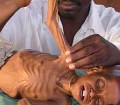

Kategorie: Landbewirtschaftung in Mecklenburg-Vorpommern · 15 Beiträge (statisches Archiv)
landfrau29.08.2012, 07:46 Uhr
Landbewirtschaftung als Herausforderung
Mecklenburg-Vorpommern ist geprägt durch seine ländlichen Räume, die 85% der Landesfläche einnehmen.
Dies kann großes Konfliktpotential bedeuten, denn die Begehrlichkeiten an diese Räume melden neben Landwirten und der Naturschutz auch die Touristikbranche an.
Die Landbewirtschaftung durch konventionelle und ökologisch ausgerichtete Betriebe wird seit Jahrhunderten immer weiter intensiviert. Die Einflüsse des Weltmarktes machen auch vor der Landwirtschaft keinen Halt, für sie gelten ökonomische Grundsätze genauso wie für alle anderen Wirtschaftszweige, für die Kommunen bis hin zum Verbraucher.
Der Landwirt erfüllt durch die Bewirtschaftung der Flächen vielseitige Aufgaben: Er sichert den Lebensunterhalt seiner Familie und der Angestellten, er stellt hochwertige Ausgangsprodukte für die Lebensmittelwirtschaft her, er pflegt die Kulturlandschaft, schützt die Natur und stellt Eigentumsflächen für Naturschutzprojekte bereit, er wirkt aktiv auf die Entwicklung der ländlichen Räume ein, sei es durch kommunale Dienstleistungen, finanzielle Unterstützungen der Feuerwehren und Vereine sowie kultureller Aktivitäten oder alleine dadurch, dass er als attraktiver Steuerzahler seinen Pflichten nachkommt. Dies alles wird leider von einem Teil der Bevölkerung , die ja letztendlich Verbraucher der landwirtschaftlichen Produkte sind, ignoriert. Wenn Landwirte in Tierhaltung investieren wollen, findet fast ein Volksbegehren statt. Dabei geht es doch darum, den Landwirtschaftsbetrieb nachhaltiger aufzustellen und deren Wirtschaftskraft zu stärken, regionale Produkte für die Verbraucher bereit zu stellen und natürlich auch Arbeitsplätze zu schaffen. Aus ökologischer Sicht ist die Ausweitung der Tierbestände unabdingbar, organische Substanz wird für die Sicherung und Verbesserung der Bodenfruchtbarkeit und besonders im ökologischen Landbau als natürlicher Nährstofflieferant benötigt.
Umfangreiche Forschungen und Entwicklungen sichern den Tieren optimale Bedingungen für ihre Entwicklung, weitreichende Gesetze regeln die Stallbauten, angefangen beim Standort über die Bauausführung, Immissionsschutz bis hin zur ordnungsgemäßen Verwendung der anfallenden organischen Substanz. Alles wird von Fachleuten überwacht und geprüft. In keiner anderen Branche gibt es so viele Produktionsvorschriften und Kontrollen, wie in der Landwirtschaft. Landwirte studieren oft 5 Jahre an Hochschulen und Universitäten, um den Anforderungen bei der Führung eines Landwirtschaftsbetriebes gerecht zu werden. Verbraucher, die mit Schlagwörtern wie "Massentierhaltung", "Pestizide", "Überdüngung" oder "Vermaisung" um sich werfen, laden die Landwirte gern zu einer fachlichen und vor allem sachlichen Diskussion ein. Pauschalverurteilungen und subjektive Empfindungen ohne fachliches Hintergrundwissen sind bei so extenziellen Problematiken, wie der ausreichenden Bereitstellung von hochwertigen Nahrungsmitteln bei gleichzeitiger Erhaltung der Natur, kontraproduktiv.
Hut ab vor den Landwirten, die in Zeiten stagnierender und sinkender Erlöse bei Milch, Fleisch oder Eiern sowie steigender Kosten für Futter und Energie noch die Initiative ergreifen und in Tierhaltungsanlagen investieren. Wer möchte Grundnahrungsmittel kaufen, bei denen er nicht weiß, wo sie herkommen und unter welchen Bedingungen sie produziert wurden??? Wünschenswert wäre nur, dass die Verbraucher den Widerspruch zwischen geäußerter Selbsteinschätzung hinsichtlich des Preises, den sie für Lebensmittel ausgeben würden, und ihrem realen Kaufverhalten beseitigen würden.
Übrigens liegt es im ureigenen Interesse eines jeden Landwirtes, seine Flächen so nachhaltig zu bewirtschaften und die Tiere so zu halten, dass auch seine Nachkommen durch den Betrieb ihr Auskommen haben. Ein Landwirt denkt schon seit Jahrhunderten generationsübergreifend.
einwohner05.09.2012, 17:09 Uhr
Re: Landbewirtschaftung als Herausforderung
landfrau hat geschrieben:
Die Landbewirtschaftung durch konventionelle und ökologisch ausgerichtete Betriebe wird seit Jahrhunderten immer weiter intensiviert... Aus ökologischer Sicht ist die Ausweitung der Tierbestände unabdingbar, organische Substanz wird für die Sicherung und Verbesserung der Bodenfruchtbarkeit und besonders im ökologischen Landbau als natürlicher Nährstofflieferant benötigt.
Liebe Landfrau,
vielen Dank für die grundsätzliche Positionierung. Cui bono?
Und weil heute die Welt in MV nicht mehr 50 Jahre später untergehen kann, zitiere ich hier mal ein paar Zeilen von www.weltagrarbericht.de (Der Weltagrarbericht ist inzwischen zwar schon 4 Jahre alt, aber seine Aussagen werden durch diesen Zeitraum nicht relativiert sondern bestätigt):
"Landwirtschaft am Scheideweg - Weiter wie bisher ist keine Option
Fast eine Milliarde Menschen hungern auf diesem Planeten während ebenso viele an krank machender Fettleibigkeit leiden. 2,3 Milliarden Tonnen Getreide wurden 2011 weltweit geerntet, mehr als je zuvor. Doch nur 46% dieser Ernte dienen als Lebensmittel. Der Rest wird zu Tierfutter, Sprit und Industrierohstoffen verarbeitet. Unser Ernährungs-System ist eine der wichtigsten Ursachen für den Klimawandel, das Artensterben, für Umweltvergiftung, Wasserknappheit, vermeidbare Krankheiten, Kinderarbeit, Armut und Ungerechtigkeit. Dieses System ist krank." Wer wissen will, welchen Anteil die Ausweitung der Tierbestände am Hunger auf der Welt hat, kann im Weltagrarbericht nachlesen.
Solange die organische Substanz für die Sicherung und Verbesserung der Bodenfruchtbarkeit durch Zufütterung von Überseesoja gesteigert wird, bleibt die Nachhaltigkeit dieser Wirtschaftsform schwer vermittelbar.
Schwalbe10.09.2012, 21:49 Uhr
Re: Landbewirtschaftung als Herausforderung
landfrau hat geschrieben:
Wenn Landwirte in Tierhaltung investieren wollen, findet fast ein Volksbegehren statt. Dabei geht es doch darum, den Landwirtschaftsbetrieb nachhaltiger aufzustellen und deren Wirtschaftskraft zu stärken, regionale Produkte für die Verbraucher bereit zu stellen und natürlich auch Arbeitsplätze zu schaffen. Aus ökologischer Sicht ist die Ausweitung der Tierbestände unabdingbar, organische Substanz wird für die Sicherung und Verbesserung der Bodenfruchtbarkeit und besonders im ökologischen Landbau als natürlicher Nährstofflieferant benötigt.
Umfangreiche Forschungen und Entwicklungen sichern den Tieren optimale Bedingungen für ihre Entwicklung, weitreichende Gesetze regeln die Stallbauten, angefangen beim Standort über die Bauausführung, Immissionsschutz bis hin zur ordnungsgemäßen Verwendung der anfallenden organischen Substanz. Alles wird von Fachleuten überwacht und geprüft. In keiner anderen Branche gibt es so viele Produktionsvorschriften und Kontrollen, wie in der Landwirtschaft. Landwirte studieren oft 5 Jahre an Hochschulen und Universitäten, um den Anforderungen bei der Führung eines Landwirtschaftsbetriebes gerecht zu werden. Verbraucher, die mit Schlagwörtern wie "Massentierhaltung", "Pestizide", "Überdüngung" oder "Vermaisung" um sich werfen, laden die Landwirte gern zu einer fachlichen und vor allem sachlichen Diskussion ein. Pauschalverurteilungen und subjektive Empfindungen ohne fachliches Hintergrundwissen sind bei so extenziellen Problematiken, wie der ausreichenden Bereitstellung von hochwertigen Nahrungsmitteln bei gleichzeitiger Erhaltung der Natur, kontraproduktiv.
Hut ab vor den Landwirten, die in Zeiten stagnierender und sinkender Erlöse bei Milch, Fleisch oder Eiern sowie steigender Kosten für Futter und Energie noch die Initiative ergreifen und in Tierhaltungsanlagen investieren. Wer möchte Grundnahrungsmittel kaufen, bei denen er nicht weiß, wo sie herkommen und unter welchen Bedingungen sie produziert wurden??? Wünschenswert wäre nur, dass die Verbraucher den Widerspruch zwischen geäußerter Selbsteinschätzung hinsichtlich des Preises, den sie für Lebensmittel ausgeben würden, und ihrem realen Kaufverhalten beseitigen würden.
Übrigens liegt es im ureigenen Interesse eines jeden Landwirtes, seine Flächen so nachhaltig zu bewirtschaften und die Tiere so zu halten, dass auch seine Nachkommen durch den Betrieb ihr Auskommen haben. Ein Landwirt denkt schon seit Jahrhunderten generationsübergreifend.
Proteste gibt es meist nur, soweit ich informiert bin, wenn Massentierhaltungsanlagen geplant sind, und das zu Recht. Das Arbeitsplatzargument zieht für diese Art von Tierhaltung auch nicht, da ein Verdrängungswettbewerb stattfindet, und für jeden Arbeitsplatz, der in riesigen Tierhaltungsanlagen geschaffen wird, andere in der bäuerlichen Landwirtschaft verschwinden. Auch mit Nachhaltigkeit hat das alles beim besten Willen nichts zu tun, ebenso wenig wie mit Regionalität. Oder kann Schweinefleisch aus Straathofschen Ställen als regionales Produkt bezeichnet werden? Seine Tierfabriken könnten überall auf der Welt stehen, falls sich gewissenlose Menschen dazu hinreißen lassen, ihm Land zu verkaufen. Ich kann überhaupt keinen Bezug zur Region erkennen.
Um die Bodenfruchtbarkeit zu verbessern, könnten auch z.B. Leguminosen auf einem Teil der Flächen angebaut werden. Die Ausweitung der Tierbestände mit dem Argument, nur so ausreichend organischen Dünger zur Verfügung zu haben, zu begründen, halte ich für falsch und aus ökologischer Sicht für verhängnisvoll.
In den Massentierhaltungsanlagen sind die Bedingungen für Tiere alles andere als optimal, das lernt jedes Kind schon im Biologieunterricht. Tierwohl, Verbraucher- und Umweltschutz spielen nur eine untergeordnete Rolle, es geht um Gewinnmaximierung um jeden Preis. Mich wundert sehr, dass von den Landwirten selbst so wenig gegen diese Zustände unternommen wird. Oder habe ich da was verpasst? Selbst Fachleute beklagen, dass Kontrollen nicht ausreichen, bzw. Testverfahren weiterentwickelt werden müssen, damit tatsächlich gründliche Untersuchungen in ausreichender Zahl durchgeführt werden können. Wie oft Behörden auf der ganzen Linie versagen, wurde beim Bau der Ferkelfabrik in Alt Tellin deutlich. Es scheint, dass sie weder personell noch finanziell dafür ausgestattet sind, um solche riesigen Projekte zu kontrollieren.
Das Wort "Massentierhaltung" sagt aus, dass Tiere in Massen an einem Ort gehalten werden. Ein wirklich harmloses Wort für massenhaftes Tierleid und allerhand unappetitliche Details, die immer wieder aufgedeckt werden. Dass "Pestizide" auf der schwarzen Liste der unerwünschten Wörter steht, wusste ich noch gar nicht. Ich dachte, es handelt sich um einen Fachausdruck...aber bitte, auch die "Herbizide" sollten nicht ganz vergessen werden, wo doch gerade so viel über Glyphosat zu lesen ist.
"Überdüngung" ist offensichtlich ein Problem für das Grundwasser, Flüsse, Seen und die Ostsee. Für Zeitgenossen, die die Ausweitung der Tierbestände aus ökologischer Sicht für unabdingbar halten, ist allerdings nur die Verwendung dieses Wortes problematisch. "Vermaisung" beschreibt das, was viel Leute sehen, wenn sie in M-V über Land fahren.
Getreide, dass kurz vor der Ernte mit Glyphosat gespritzt wurde, ist für mich kein hochwertiges Lebensmittel, ebenso wenig wie Fleisch aus Massentierhaltung.
Der Verbraucher weiß bei tierischen Lebensmittel eben nicht, woher die Tiere stammen und erfährt auch nichts über die Haltungsform. Deswegen brauchen wir ja eine Kennzeichnungspflicht. Vielleicht würde sich dann Ekelfleisch der Marke "Massentierhaltung" von ganz allein zum Ladenhüter entwickeln.
Landmaus12.09.2012, 10:37 Uhr
Re: Landbewirtschaftung als Herausforderung
Getreide, dass kurz vor der Ernte mit Glyphosat gespritzt wurde, ist für mich kein hochwertiges Lebensmittel, ebenso wenig wie Fleisch aus Massentierhaltung.
Der Verbraucher weiß bei tierischen Lebensmittel eben nicht, woher die Tiere stammen und erfährt auch nichts über die Haltungsform. Deswegen brauchen wir ja eine Kennzeichnungspflicht. Vielleicht würde sich dann Ekelfleisch der Marke "Massentierhaltung" von ganz allein zum Ladenhüter entwickeln.
Dazu braucht es keine Kennzeichnung, wer billiges Fleisch aus der ALDI/Lidle und Co Theke fischt, weiß, dass es aus Haltungsformen stammt, die diesen Preis rechtfertigen. Wobei eine Großanlage nicht automatisch gegen Tierwohl verstößt. So wie sich Menschen in Hochhäusern nicht unwohl fühlen müssen, wenn die einzelne Wohnzelle auf ihre Bedürfnisse hin ausgerichtet ist, so sollte man auch bei Großanlagen der Tierproduktion immer auf den Platz, die hygienische Fütterung, die tierärztliche Versorgung und die Möglichkeit, zu Artgenossen Kontakt zu halten , schauen. Nicht jedes Tier auf dem bayrischen Kleinbauernhof in zum Teil Anbindehaltung und dunklen ,engen Ställen hat es besser , als ein Tier in einer Großraumbox in hellem, gut gelüfteten Stall.
Angelika Janz13.09.2012, 14:00 Uhr
Re: Landbewirtschaftung als Herausforderung
Für uns als unmittelbare Anwohner an intensiv bewirtschafteten Feldern wäre es hilfreich, an den Tagen, an denen Gift gespritzt wird, Gülle auf den Feldern verteilt wird, eine Information herauszugeben. Wir haben hier kleine Kinder und kranke Mneschen. Ein Aushang genügte vielleicht auch, es spricht sich in kleinen Dörfern schnell herum. Längst sind wir unsicher, ob wir unser Obst, das unmittelbar an den Feldern angrenzt, noch als gesund bezeichnen können. Viele ernten es aus diesem Grund schon nicht mehr. Das ist traurig: Wir leben auf dem Land doch zuzeiten in einem Giftmilieu! In diesem Winter war die Gülleverspritzung besonders extrem. Ein großer Anteil Menschen in unserem Dorf ist an Krebs erkrankt oder bereits gestorben....
Noch etwas zur Lebensqualität: Früher konnten wir Bewohner bestimmte Wege an den Feldrändern entlang gehen, um die Natur vielleicht ein wenig zu genießen oder zu einem Wäldchen oder zu dem nächsten Dorf zu Fuß zu gelangen. Das ist seit vielen Jahren nicht mehr möglich, die Felder sind bis zur Randbepflanzung bewirtschaftet, die einstigen Gewohnheitswege zwischen zwei Feldern oder einem Kanal und dem Feld einfach mitbewirtschaftet und uns Menschen bleibt der abendliche Spazier-Weg verschlossen in dieser "Großindustrie Landwirtschaft."
Schwalbe13.09.2012, 15:41 Uhr
Re: Landbewirtschaftung als Herausforderung
landfrau hat geschrieben: Mecklenburg-Vorpommern ist geprägt durch seine ländlichen Räume, die 85% der Landesfläche einnehmen.
Dies kann großes Konfliktpotential bedeuten, denn die Begehrlichkeiten an diese Räume melden neben Landwirten und der Naturschutz auch die Touristikbranche an.
Gestern rief mich eine Bekannte an, die in einem einzelstehenden, von Feldern umgebenen Gehöft wohnt, und erzählte mir folgende Begebenheit: Gestern wurde gespritzt und sie befand sich auf ihrem Grundstück in einem Chemienebel, da es auch windig war. Daraufhin rief sie beim Landwirt an und bat freundlich um mehr Rücksicht. Die Frau des Landwirtes, welche das Gespräch entgegen nahm antwortete, sie solle doch in den Neubau ziehen, wenn ihr das nicht passt. Meine Bekannte blieb freundlich und bestimmt, und letztendlich wurde ihr eine Aussprache zugesagt.
Neben den von landfrau beschriebenen Begehrlichkeiten sollte nicht vergessen werden, dass der ländliche Raum auch Heimat für Menschen ist.
Schwalbe14.09.2012, 15:06 Uhr
Re: Landbewirtschaftung als Herausforderung
Der ländliche Raum ist auch Heimat für Menschen, die ein ureigenes Interesse daran haben, ihn lebenswert und attraktiv zu gestalten.
Fragen zum Weltmarkt fallen mir viele ein, und auf jede beantwortete Frage folgt eine neue. Warum sind Börsenspekulationen auf Nahrungsmittel erlaubt? Welche globalen Auswirkungen haben z.B. Exportsubventionen? Trägt Bioenergie zur Nahrungsmittelverteuerung bei? Trotzdem können wir die Verantwortung für unser Handeln nicht einfach abgeben und Fehlentwicklungen im eigenen Land und Zuständigkeitsbereich mit Hinweis auf den Weltmarkt rechtfertigen.
Hut ab vor Landwirten, die diese vielseitigen Aufgaben erfüllen. Ich bin jedoch der Meinung, dass diese Darstellung zu pauschal ausfällt.
-Pflanzen, die z.B. mit Klärschlamm, Keim- oder Antibiotika belastetem Mist gedüngt oder mit glyphosathaltigen Mitteln gespritzt wurden, stellen für mich kein hochwertiges Ausgangsprodukt dar, ebenso wenig wie Fleisch aus Massentierhaltung.
-Im Winter sichert für einen Teil der Angestellten der Steuerzahler über das Arbeitslosengeld das Einkommen, ein Mindestlohn von 8,50 € wird derzeit von führenden Vertretern des Bauernverbandes abgelehnt.
-Umgepflügte oder weggespritzte Feldränder, unsachgemäß beschnittene Bäume am Rand des Feldes, fehlende Hecken und Schutzstreifen gegen Winderosion auf riesigen Feldern und zugeschüttete Wasserlöcher und Sölle- oft würde ich mir einen kulturvolleren Umgang mit der Landschaft wünschen.
-Im Peenetal z.B. wurden landwirtschaftliche Flächen dem Naturschutz zur Verfügung gestellt, da Landwirte sich deren Bewirtschaftung durch die Kosten der Entwässerung nicht mehr leisten konnten. Sie wurden entschädigt, bzw. wurden langjährige bezahlte Pflegeverträge geschlossen.
-Landwirtschaft gehört zum ländlichen Raum und ist demzufolge an seiner Entwicklung beteiligt. Die sich ausbreitende Agrarindustrie schadet allerdings einer positiven Entwicklung.
einwohner14.09.2012, 21:29 Uhr
Re: Landbewirtschaftung als Herausforderung
Schwalbe hat geschrieben:
-Landwirtschaft gehört zum ländlichen Raum und ist demzufolge an seiner Entwicklung beteiligt. Die sich ausbreitende Agrarindustrie schadet allerdings einer positiven Entwicklung.
"Mecklenburg-Vorpommern ist ohne eine sich ständig entwickelnde Land- und Ernährungswirtschaft nicht überlebenswichtig, hob auch Landesbauernpräsident Rainer Tietböhl den hohen Stellenwert der Branche hervor."
(aus Pressemitteilung vom 13.09.2012: Mela mit neuem Ausstellerrekord eröffnet <!-- m --><a class="postlink" href="http://www.mela-messe.de/Presse-Service/Pressemitteilungen/index.jsp">http://www.mela-messe.de/Presse-Service ... /index.jsp</a><!-- m -->)
Schwalbe15.09.2012, 10:17 Uhr
Re: Landbewirtschaftung als Herausforderung
Landmaus hat geschrieben: Dazu braucht es keine Kennzeichnung, wer billiges Fleisch aus der ALDI/Lidle und Co Theke fischt, weiß, dass es aus Haltungsformen stammt, die diesen Preis rechtfertigen. Wobei eine Großanlage nicht automatisch gegen Tierwohl verstößt. So wie sich Menschen in Hochhäusern nicht unwohl fühlen müssen, wenn die einzelne Wohnzelle auf ihre Bedürfnisse hin ausgerichtet ist, so sollte man auch bei Großanlagen der Tierproduktion immer auf den Platz, die hygienische Fütterung, die tierärztliche Versorgung und die Möglichkeit, zu Artgenossen Kontakt zu halten , schauen. Nicht jedes Tier auf dem bayrischen Kleinbauernhof in zum Teil Anbindehaltung und dunklen ,engen Ställen hat es besser , als ein Tier in einer Großraumbox in hellem, gut gelüfteten Stall.
Den Vergleich von Menschen, die in Hochhäusern leben und Tieren in Großanlagen finde ich absurd.
Tieren in Großanlagen werden alle möglichen Körperteile abgeschnitten oder gestutzt, da sie sich bedingt durch die Enge und die Haltungsform, die eben nicht artgerecht ist, sonst gegenseitig verletzen würden. Soviel zum Kontakt mit den Artgenossen...
Züchtungen, die begehrte Fleischpartien überdimensional wachsen lassen, machen Tiere bewegungsunfähig und fügen ihnen Schmerzen zu.
Hochleistungsfutter sorgt dafür, dass Tiere so schnell wie möglich zur Schlachtreife heranwachsen. Antibiotika wird in solchen Anlagen nicht nur dem erkrankten Tier verabreicht, sondern ganze Bestände bekommen es prophylaktisch.
Auch Kleinbauernhöfe verfügen über moderne Ställe. Falls es kleine Bauernhöfe gibt, wo Tiere in dunklen Ställen angebunden stehen müssen, dient das trotzdem nicht zur Rechtfertigung für Massentierhaltung. Vielmehr sollte eine gerechte Subventionspolitik diese Landwirte in die Lage versetzen, in neue Ställe zu investieren.
Der Verbraucher hat ein Recht auf Information. Durch die Kennzeichnung von Eiern veränderte sich das Kaufverhalten in bemerkenswerter Weise. Ich bin der Meinung, dass das auch bei allen Produkten aus Fleisch und Milch möglich wäre.
Schwalbe15.09.2012, 12:29 Uhr
Re: Landbewirtschaftung als Herausforderung
einwohner hat geschrieben:
Schwalbe hat geschrieben:
-Landwirtschaft gehört zum ländlichen Raum und ist demzufolge an seiner Entwicklung beteiligt. Die sich ausbreitende Agrarindustrie schadet allerdings einer positiven Entwicklung.
"Mecklenburg-Vorpommern ist ohne eine sich ständig entwickelnde Land- und Ernährungswirtschaft nicht überlebenswichtig, hob auch Landesbauernpräsident Rainer Tietböhl den hohen Stellenwert der Branche hervor."
(aus Pressemitteilung vom 13.09.2012: Mela mit neuem Ausstellerrekord eröffnet http://www.mela-messe.de/Presse-Service/Pressemitteilungen/index.jsp)
Für mich ist die Unterscheidung von Landwirtschaft und Agrarindustrie wichtig. Ich bin der Meinung, dass Landwirtschaft zum ländlichen Raum gehört. Dass sich agrarindustrielle Strukturen ausbreiten, schadet einer ausgewogenen und erfolgreichen Entwicklung des ländlichen Raumes. Warum ich das so sehe, habe ich hier im Forum schon mehrfach begründet.
Ich nehme an, Sie meinten in Ihrem Text "überlebensfähig". Für mich stellt sich dabei die Frage, in welche Richtung sich die Landwirtschaft entwickelt. Sie ist in hohem Maße selbst auf eine intakte Umwelt, biologische Vielfalt, gesunde Böden und sauberes Wasser angewiesen. Laufen Entwicklungen in die falsche Richtung, werden unsere natürlichen Ressourcen nachhaltig geschädigt, entzieht die Landwirtschaft sich selbst ihrer Existenzgrundlage.
einwohner15.09.2012, 17:22 Uhr
Re: Landbewirtschaftung als Herausforderung
"Mecklenburg-Vorpommern ist ohne eine sich ständig entwickelnde Land- und Ernährungswirtschaft nicht überlebenswichtig, hob auch Landesbauernpräsident Rainer Tietböhl den hohen Stellenwert der Branche hervor."
Schwalbe hat geschrieben:
Ich nehme an, Sie meinten in Ihrem Text "überlebensfähig".
Der Text ist ein Zitat vom Landesbauernpräsident Rainer Tietböhl. http://www.mela-messe.de/Presse-Service/Pressemitteilungen/index.jsp?lang=de&id=235584
Es lohnt sich, die ganze Pressemitteilung zu lesen.
Auch diese: Landesbauerntag auf der Mela - Lebhafte Diskussion um Situation der Veredlungswirtschaft:
"Landwirtschaft muss künftig wieder regionaler werden. Mit diesem Appell zum Auftakt des traditionellen Bauerntages auf der MeLa in Mühlengeez machte Landesbauernpräsident Rainer Tietböhl auf die aktuell weltweiten Witterungsprobleme in der Agrarproduktion aufmerksam. Dürre in den USA, Hagel im Schwarzmeergebiet, Ertragsausfälle in Russland, Witterungsunbilden in vielen Regionen haben die weltweiten Erntevorträge auf 50 Tage schrumpfen lassen. Dem muss, so die Forderung zuallererst auch an die Politik, entgegengesteuert werden."
Wer wird wohl die Preissteigerung des Tierfutters kompensieren müssen? Gülleproduktion ist notwendig für den Anbau erneuerbarer Energien.
In diesem Forum ist das Thema schon mehrfach angeschnitten worden.
Siehe auch: http://www.weltagrarbericht.de/aktuelles/nachrichten/news/de/26227.html [Anhang: <!-- ia0 -->hunger.jpg<!-- ia0 -->]
Alle 5 Sec. verhungert ein Kind
Landbewirtschaftung ist wirklich eine Herausforderung.

hunger.jpg
Schwalbe16.09.2012, 18:20 Uhr
Re: Landbewirtschaftung als Herausforderung
das Arar- Umwelt - Programmes unseres Landes kann grundsaetzlich nur in enger zusammenarbeit mit den Landwirtschaftsbetrieben erarbeitet werden - zur vorbereitung des Masterplanes sollte deshalb ein --- BEISPIELSBETRIEB ----- benannt werden , wo die verschiedenen agraroekologischen massnahmen direkt in der praxis ausprobiert werden koennen , der finanzbedarf ermittelt wird und anschließend bei der entwicklung der Foerderfibel beruecksichtigung finden kann . die festlegung der wirksamsten massnahmen erfordert natuerlich die zusammenarbeit mit ornithologischen fachleuten .
nachfolgend koennen in diesem betrieb PRAXISKONSULTATIONEN fuer interessierte Landwirte durchgefuehrt und gute ergebnisse verallgemeinert werden .
die BERATUNG der Landwirte muss in vorbereitung und realisierung des GREENING ----in wesentlichen bereichen intensiviert werden .-----da diese aufgabe nicht nebenbei erledigt werden kann , sollte beim Bauernverband unseres Landes , bei der Landgesellschaft oder bei der Siftung Umwelt - und Naturschutz eine ----zusaetzliche PLANSTELLE ---- geschaffen werden .von dort aus koennen auch LOKALE INITIATIVEN und VORORT- PARTNERSCHAFTEN initiert und gestaerkt werden .nicht vergessen werden duerfen dabei die Landfrauen und die Landjugend ! Tourismusentwicklung und Naturschutz sind besonders in den Landgemeinden eng verknuepft , und bieten ein reiches betaetigungsfeld .der Arbeiskreis " Junge Landwirte "kann auch durch solche massnahmen zur verbesserung des immage der LW beitragen .
bei der geplanten veraenderung der Foerdermittelvergabe sollte der FELDVOGELSCHUTZ stark beruecksichtigt werden ! eine hohe wertigkeit ist dabei der realisierung von EINZELBETRIEBLICHEN NS - FACHPLAENEN einzuraeumen .weitere praemien sollten fuer produktionsintegrierte einzel- massnahmen,z. B. einrichtung von Kiebitzinseln ,doppelter Reihenabstand ,Brachesteifen u.a. gezahlt werden .
Schwalbe15.10.2012, 16:11 Uhr
Re: Landbewirtschaftung als Herausforderung
Zum Nachdenken:
Michael Beleites:
Leitbild Schweiz oder Kasachstan? Zur Entwicklung der ländlichen Räume in Sachsen
Eine Denkschrift zur Agrarpolitik (Stiftung Weiterdenken, AbL-Verlag, Dresden/Hamm 2012)
Thesen:
1. Im Osten Deutschlands ist der durchschnittliche Landwirtschaftsbetrieb mehr als fünf Mal so groß wie im Westen, die Zahl der Beschäftigten je 100 Hektar liegt aber nur bei knapp einem Drittel. Somit bringt die Ost-Landwirtschaft eine erheblich geringere Wertschöpfung in die ländlichen Räume als die westdeutsche.
2. Die ostdeutsche Sondersituation ist keine „gewachsene Agrarstruktur“, sondern die Folge kommunistischer Systemverbrechen. Mit ihrer dreistufigen Klassenkampfpolitik gegen die Bauern – Bodenreform, Kollektivierung, Industrialisierung – machte die SED-Herrschaft flächendeckend die freien Bauern zu abhängigen Landarbeitern.
3. Im Westen führte die Politik des „Wachsen oder Weichen“ zu einem sanfteren Höfesterben, aber tendenziell ebenso zu einer Konzentration der Landwirtschaft.
4. Industrielle Landwirtschaft ist untrennbar verbunden mit einer Schädigung von Böden und Grundwasser, einer Qualitätsminderung der Nahrung, sowie mit einer wirtschaftlichen Schwächung und letztlich Entvölkerung der ländlichen Räume.
5. Sachsen und Thüringen gehören in ihrer traditionellen Agrarstruktur zu Westdeutschland: Nicht große Gutsbetriebe mit einer armen Landarbeiterschaft, sondern kleine und mittlere Bauernhöfe prägten die mitteldeutschen Regionen.
6. Die sächsische Nach-Wende-Agrarpolitik knüpfte inhaltlich und personell an das landwirtschaftliche System der DDR an und befestigte die agrarstrukturelle Angleichung Sachsens an die „ostelbischen“ Verhältnisse des Nordostens.
7. Insgesamt kennt die DDR-geprägte Separat-Agrarpolitik der ostdeutschen Länder kaum parteipolitische Unterschiede, wenngleich der DBD-Flügel der CDU besonderes „erfolgreich“ die Lobby-Interessen der LPG-Nachfolger vertritt.
8. Fatal wirken sich die 1992 eingeführten flächenbezogenen EU-Subventionen aus, die ein von Bewirtschaftung unabhängiges Festhalten an jedweder Agrarfläche bewirken – und in den ostdeutschen Ländern die sozialistisch geprägte Agrarstruktur eingefroren haben.
9. Prinzipiell haben kleine Betriebe weitaus bessere Voraussetzungen, nach der Grundidee einer ökologischen Kreislaufwirtschaft zu funktionieren als große. Die schleichende Agrar-Industrialisierung des Öko-Landbaus untergräbt das Vertrauen in die Bio-Branche.
10. Eine Umkehr hin zu einer verantwortbaren Agrarpolitik muss sich an langfristig angelegten Konzepten, wie dem der „Postwachstumsökonomie“ (Niko Paech), orientieren. In Sachsen und Thüringen sind die dafür nötigen Bauernhöfe physisch noch vorhanden, meist noch mitsamt dem dazugehörigen Bodeneigentum. Deren bäuerliche Reaktivierung durch Junglandwirte zu fördern, ist Aufgabe einer zukunftsorientierten Agrarpolitik.
11. Agrarsubventionen wurden nicht eingeführt um die Landwirte zu stützen, sondern um ihre Produkte zu verbilligen: damit die Verbraucher weniger für Ernährung und mehr für Industrieprodukte investieren. Sie sind ein Teil jener Wachstumsbeschleunigung, die eine gesunde bäuerliche Landwirtschaft erstickt. Der Kampf der landwirtschaftlichen Interessenvertretungen für Agrarsubventionen verschärft die strukturelle Schwäche der Landwirtschaft, die eigentlich die Basis-Wirtschaft jeder Gesellschaft ist.
12. Eine wirkliche Agrarwende braucht keine neuen Subventionen und keine ökologisch deklarierte Bürokratisierung der bäuerlichen Arbeit, sondern eine Komplettabschaffung der Agrarsubventionen – bei gleichzeitiger Einführung einer Agrochemikalien-Abgabe sowie gesetzlicher Obergrenzen für Betriebsgrößen und Viehbestände.
Studentin18.10.2012, 21:15 Uhr
Re: Landbewirtschaftung als Herausforderung
Schwalbe hat geschrieben:
11. Agrarsubventionen wurden nicht eingeführt um die Landwirte zu stützen, sondern um ihre Produkte zu verbilligen: damit die Verbraucher weniger für Ernährung und mehr für Industrieprodukte investieren. Sie sind ein Teil jener Wachstumsbeschleunigung, die eine gesunde bäuerliche Landwirtschaft erstickt.
so habe ich das Ganze noch nie betrachtet. aber klingt irgendwie logisch. Andererseits: ohne die Subventionen wären die Landwirte wahrsch. nicht lebensfähig, da ihre Produktionskosten zu hoch sind und sie deshalb nicht gegen billigere Importwaren halten könnten. Somit werden sie subventioniert, um ihre Produkte verkaufen zu können - für einen Preis, der ihre Kosten eig. nicht deckt. womit wir bei der Bestätigung der These wäre (zumindest aus meiner Sicht).
Was wäre also die Lösung? In einem anderen Thread wurde geschrieben, dass es die gesetzl. Festlegung für einen bestimmten Warenpreis geben müsse, der die Produktionskosten deckt. Damit wäre doch den Landwirten schon geholfen und sie müssten nicht von Subventionen leben.
Schwalbe19.10.2012, 08:26 Uhr
Re: Landbewirtschaftung als Herausforderung
Der Sachverständigenrat für Umweltfragen hat Wege aus dieser Misere aufgezeigt.
"Aus der bisherigen Analyse
ergeben sich drei grundlegende Strategieansätze, auf die Einhaltung ökologischer Grenzen
hinzuwirken:
– Zunächst müssen auf den relevanten Ebenen – je nach Art des Umweltgutes auf globaler,
europäischer, nationaler oder ggf. auch sub-nationaler Ebene – Umweltziele formuliert
und institutionalisiert werden, die mindestens die Einhaltung wissenschaftlich fundierter
Grenzen der Tragekapazität sicherstellen.
– Mit Blick auf diese Ziele müssen Strategien für eine weitreichende Transformation der
Industriegesellschaft entwickelt werden, die neben einem radikalen Technikwandel auch
soziale Innovationen und Veränderungen der Konsum- und Lebensstile anstoßen
müssen."
– Schließlich müssen zentrale gesellschaftliche Funktionssysteme auf eine Zukunft
vorbereitet werden, in der die Volkswirtschaft nur in sehr geringem Maße wächst. Dies ist
nur durch eine Abkehr von der bisher dominanten Strategie zu erreichen, die soziale Ziele
durch eine Erhöhung des Wirtschaftswachstums zu erreichen versucht. Je besser dies
gelingt, umso unabhängiger wird die Gesellschaft von einem fortgesetzten
Wirtschaftswachstum. (Umweltgutachten 2012 des Sachverständigenrates für Umweltfragen)
Da hier oft der Verbraucher für bestimmte Fehlentwicklungen verantwortlich gemacht wird, möchte ich auch noch folgendes Zitat aus dem Umweltgutachten beifügen:
"Zudem ist der Einzelne als
Konsument angesichts allgemeiner moralischer Appelle zu umweltfreundlichem Konsum,
aber entgegengesetzter realer Anreize, häufig überfordert. Umweltverträglicher Konsum ist
somit eine gesamtgesellschaftliche Herausforderung, die eine kollektive
Verantwortungsübernahme erfordert sowie die Schaffung von Strukturen, die dem Einzelnen
umweltfreundlichen Konsum erleichtern und ermöglichen. Die negativen Auswirkungen der
derzeitigen Konsummuster im Bereich Ernährung auf die Umwelt, auf Menschen in anderen
Ländern und auf nachfolgende Generationen sind hinreichend gravierend, um Eingriffe der
Politik zu rechtfertigen.
Im Lichte der Faktoren, die einem umweltverträglichen Konsum gegenwärtig
entgegenwirken, sollte die Politik Maßnahmen ergreifen, die unerwünschte Einflussnahmen
abbauen oder verhindern. Sie könnte zum Beispiel durch Einschränkung der Werbung für
bestimmte Produkte oder für bestimmte Zielgruppen (bereits latent vorhandene) Präferenzen
für umweltfreundliche Lebensmittel aktivieren und stärken sowie instabile
Verbraucherpräferenzen in Richtung umweltgerechter Konsummuster lenken. Außerdem
sollten bestehende verzerrende ökonomische Anreize abgeschafft werden, möglichst durch
die Internalisierung externer ökologischer und auch sozialer Kosten in die Preisgestaltung."